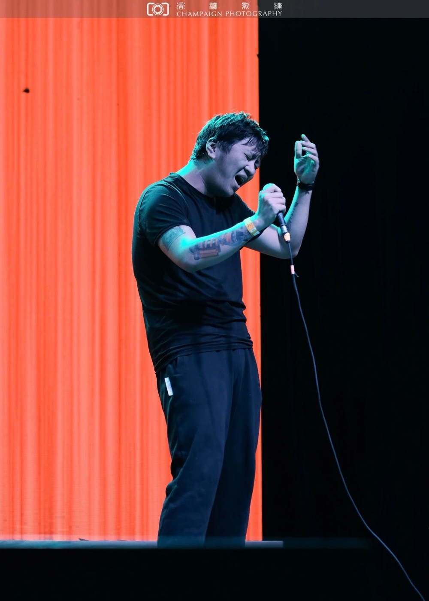
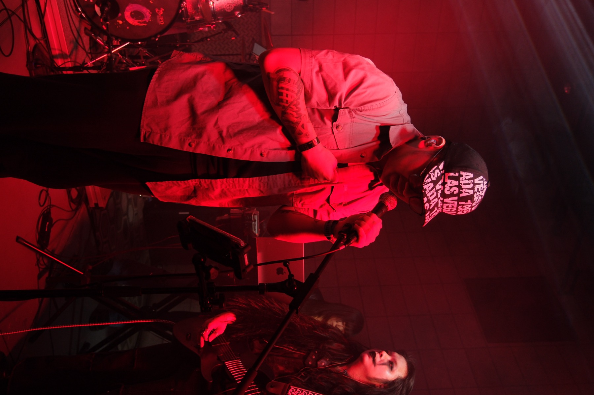

ET
®
MUSICIAN & SINGER/SONGWRITER
LISTEN ON SPOTIFY
↗
A LIFE IN MUSIC
EDWARD
TANG
✳
Musician.
Singer/songwriter.
↓
EDWARD TANG
OFF STAGE / 01
THE SONGS. THE STAGE. THE MOMENTS BETWEEN.
SCROLL TO EXPLORE ↓
In the moment
.
ON STAGE & OFF
01 / ON STAGE
↗
02 / OFF STAGE
↗

03 / IN THE LIGHT
↗

PRESS PLAY
Let the music
speak
.
Edward Tang on Spotify.
Listen on Spotify
↗